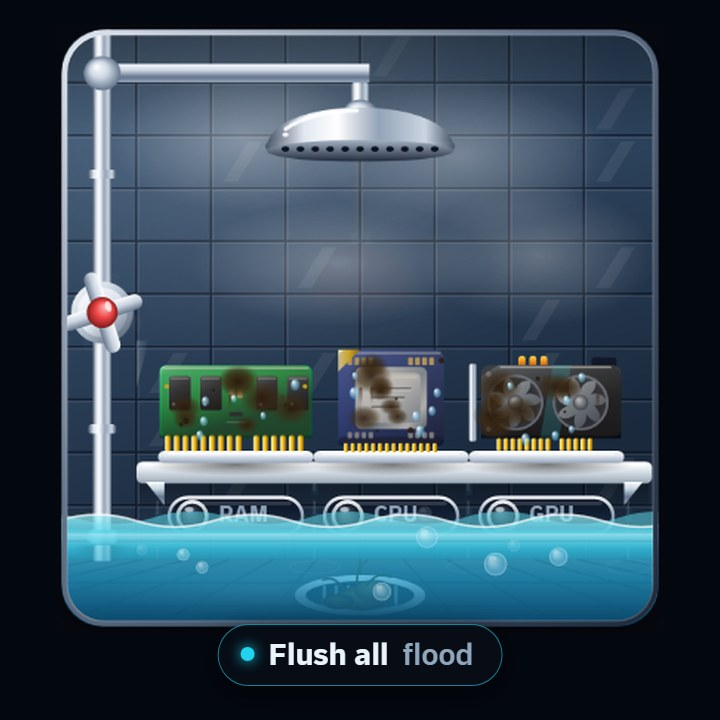
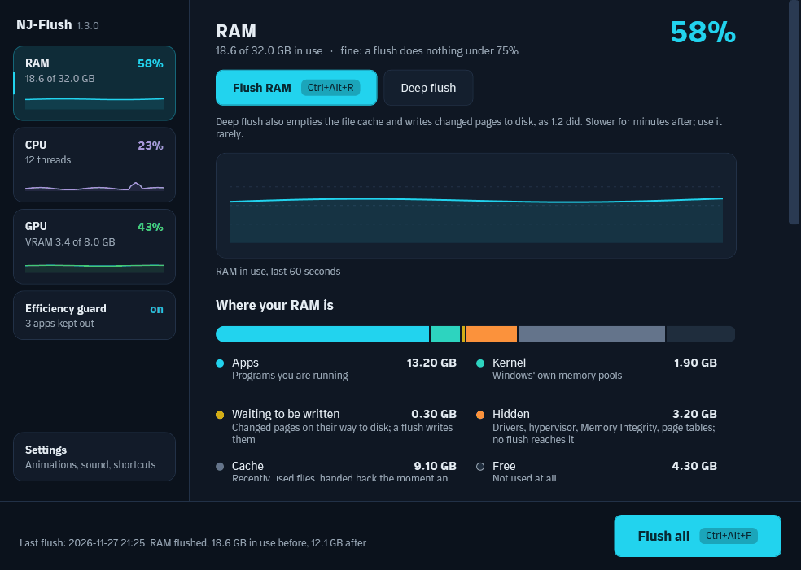
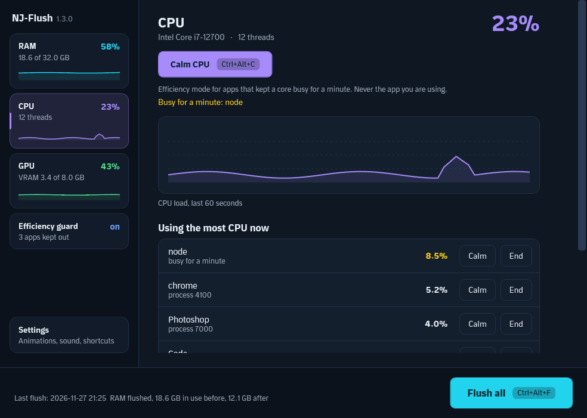
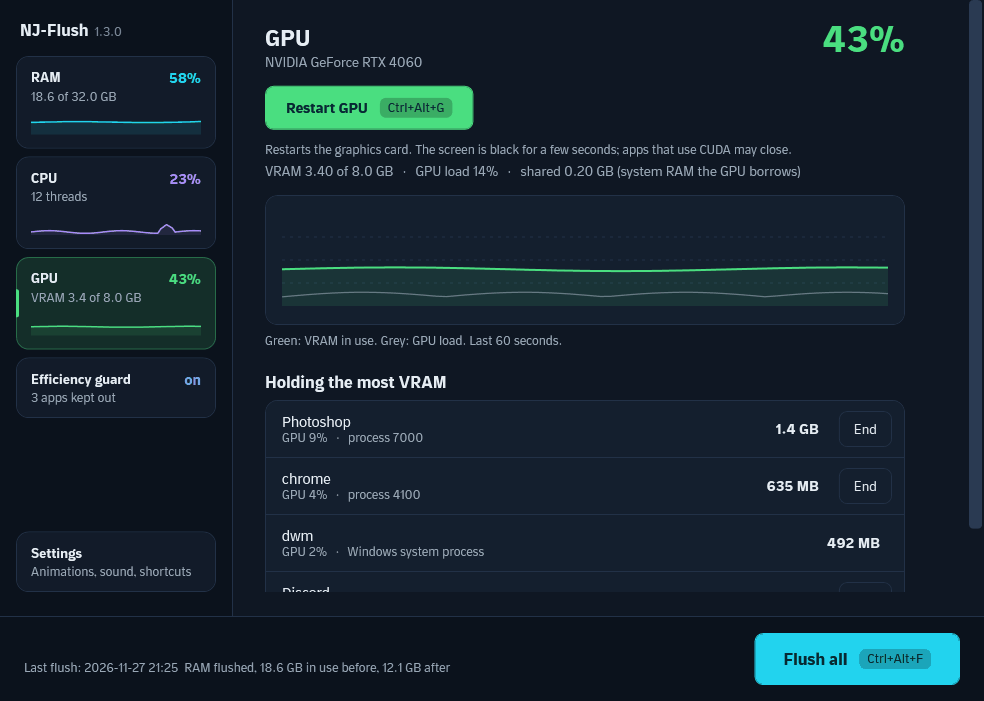
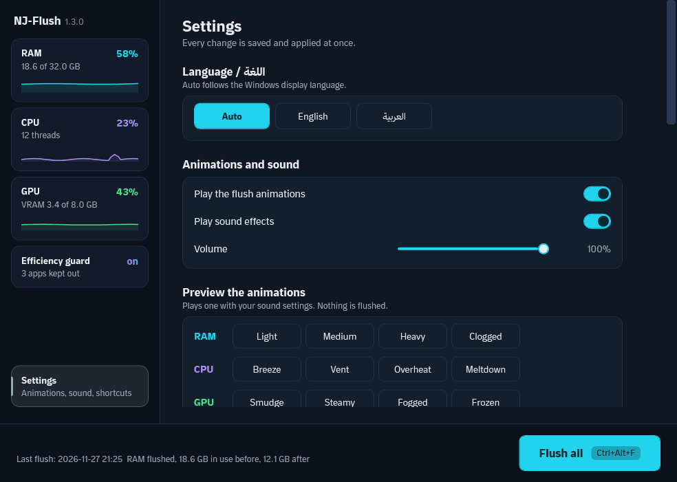
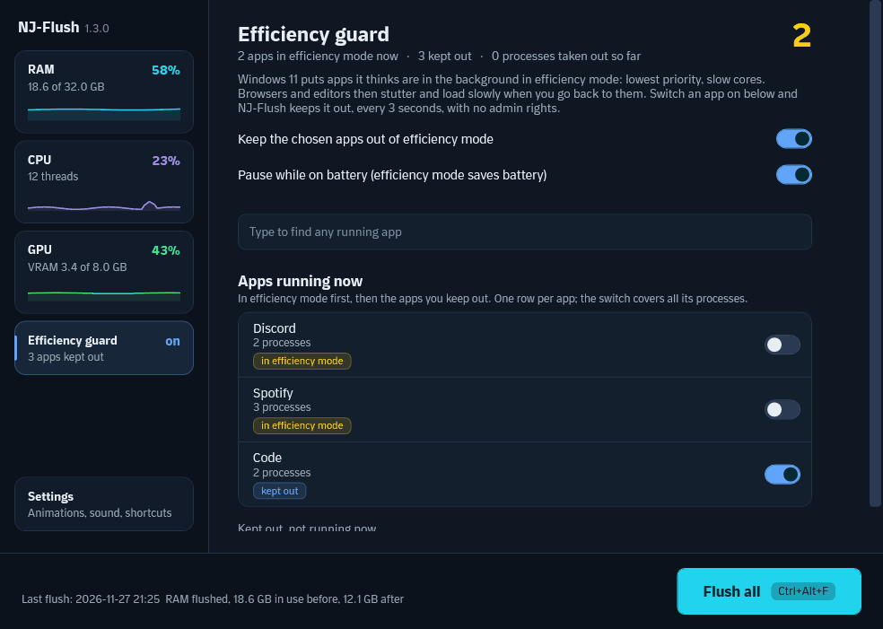

RAMA toilet
Trims idle background apps, drops the low-priority cache and stops leftover helper processes. The fuller your RAM, the harder it flushes.
LightMediumHeavyClogged
Picked by how much RAM is in use.
Shortcut: Ctrl Alt R
Frees RAM, calms the CPU and restarts the GPU, each from one button or one shortcut, and makes it fun to watch.
Free, open source, MIT licence, one file, no installer. Not code-signed yet, see the SmartScreen note below.

Each flush has its own scene and its own sound on screen, in four variants that match how bad things are.
Trims idle background apps, drops the low-priority cache and stops leftover helper processes. The fuller your RAM, the harder it flushes.
Picked by how much RAM is in use.
Shortcut: Ctrl Alt R
Puts apps that kept a CPU core busy for a full minute into efficiency mode. Never the app you are using. Restore undoes it.
Picked by CPU load, or by how many apps were busy.
Shortcut: Ctrl Alt C
Restarts the graphics card. The screen is black for a few seconds, and apps that compute on the GPU (CUDA) may fail.
Picked by how much VRAM is in use.
Shortcut: Ctrl Alt G
The GPU when it helps, then the CPU, then RAM. A chip ticks as each part finishes.
Picked by the worst of the three.
Shortcut: Ctrl Alt F
The RAM scene is picked by how much RAM is in use when you flush.
One press, a half drain.
The full swirl, all the way down.
Murky water, two presses, the bowl shakes and splashes.
The water rises, the press fails, a plunger goes in three times, then it bursts free.
Below 75% RAM in use (Settings, Flush RAM from) a RAM flush does nothing and says so.
Version 1.2 emptied every app's memory at once, and on a PC with a slow disk that turned into freezes. The 1.3 RAM flush is gentle.
Below 75% RAM in use a RAM flush does nothing and says so. The cache it would throw away is free memory already, and throwing it away makes the next minutes slower. Change the level in Settings.
Idle background apps (under 2% of a core, 64 MB or more, never the app in front, Explorer or Windows' own processes) are trimmed one by one, then the low-priority cache is dropped.
The 1.2 flush is still on the RAM page as Deep flush. It empties every working set, writes changed pages to disk and clears the standby list. Slower for minutes after, so use it rarely.
| 1.2.5 flush | 1.3 flush | |
|---|---|---|
| Pages read from disk per second, median | 4,130 | 139 |
| Pages read from disk per second, peak | 50,623 | 3,993 |
| Back to the normal level (median 247) | not within 60 s | at once |
| Modified page list, peak | 4,474 MB | 948 MB |
| Slow hard disk queue, peak | 5 | 1 |
| File Explorer killed (Winlogon event 1002) | yes | no |
| Slowest Notepad launch | 296 ms | 276 ms |
One PC, one run each: a load comparison, not a reproduction of the freeze. The 1.2.5 run came after an earlier flush that had already purged part of the cache, and the 1.3 run was forced at 32% RAM; in normal use 1.3 does nothing under 75%. Every Notepad launch stayed under 1.5 s in both. Full notes.
Double-click NJ-Flush.exe, the widget or the hidden icon, or press Ctrl Alt P. One tile per part on the left, the page on the right, Settings underneath.

RAM: a 60-second graph, the apps using the most memory, where your RAM is, Flush RAM and Deep flush.

CPU: load, the apps busy for a full minute, and Calm or Restore for each app.

GPU: VRAM and load, the apps holding the most VRAM, Restart GPU.

Settings: animations, sound, the 75% level, wait between flushes, auto-flush, shortcuts and language. Every change is saved at once.
Task Manager habitsTiles on the left, the chosen page on the right: a big value, a 60-second graph, the top apps with End, and the page's own flush button counting down its wait.
Flush all is always thereThe bottom bar keeps Flush all, with its shortcut, on every page.
Nothing moves under your mouseLists do not refresh under the pointer, so a button never moves while you aim at it.
Windows 11 puts apps it thinks are in the background into efficiency mode: lowest priority, slow cores. Browsers and editors then stutter and load slowly when you return to them.

Panel, widget, menus and messages read right to left. Settings, Language chooses English, Arabic or Auto, which follows the Windows display language.


Get NJ-Flush.exe from the latest release. One file, no installer.
The first run asks for admin approval one time. NJ-Flush copies itself to %LOCALAPPDATA%\NJ-Flush and registers a scheduled task that runs with the rights a flush needs.
From then on a double-click opens the panel, and every flush runs with no prompt at all.
The file is not code-signed yet. Choose More info, then Run anyway.
Download NJ-Flush.exe, Windows 10 or 11
Windows 10 or 11. NJ-Flush tells you when a new version is out and updates itself in one click, after checking its SHA-256. Uninstall any time from the widget's menu.
What a flush cannot do: memory held by drivers, the hypervisor, Memory Integrity or page tables cannot be flushed. The memory breakdown on the RAM page shows how much of that there is.
The setting Restart File Explorer on flush is off by default since 1.3. If you turn it on it can shuffle your desktop icons; NJ-Sort, a companion tool, keeps Windows desktop icons where you put them and puts them back after NJ-Flush restarts File Explorer.